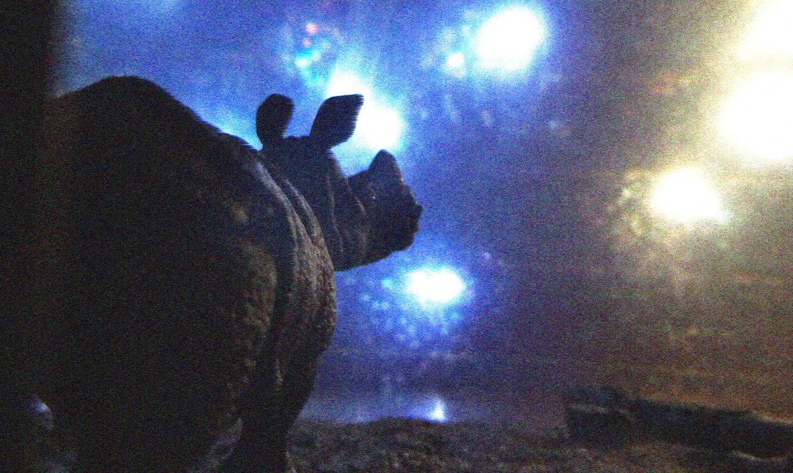

stars from the earth stars from the stars (2019):
para flauta, clarinete, violín, cello y percusión amplificados y electrónica
escrita para Madison Greenstone y el [Switch~ Ensemble]
audio:
grabación en vivo, Universidad de Harvard: HUSEAC/Paine Hall, 2019/10/4
---
En el otoño de 2016, varios diplomáticos estadounidenses que trabajaban en la embajada de EEUU en La Habana fueron víctimas de lo que inicialmente se reportó en medios de comunicación de EEUU como un ataque sónico, supuestamente ideado por el gobierno cubano. Una vez que dicha teoría fue descartada por absurda, y en parte gracias a la falta de evidencia y a una completa ausencia de comunicación aparente entre EEUU y científicos cubanos que investigaban el caso, la explicación que comenzó a circular en los noticieros por varios meses fue que las cigarras en la isla emitían un sonido tan fuerte que hicieron enfermar a los oficiales norteamericanos.
En 1978, Mercedes Sosa grabó la canción de María Elena Walsh, Como la cigarra, que se convirtió en una popular canción de protesta en contra de los gobiernos autoritarios de derecha en América Latina de la segunda mitad del siglo XX. "Cantando al sol como la cigarra / después de un año bajo la tierra, / igual que sobreviviente / que vuelve de la guerra", dice el coro. De hecho, la mayoría de las cigarras periódicas pasan 17 años enterradas como ninfas antes de salir a reproducirse y morir.
En 1933, el mismo año en que firmó la Declaración del profesorado alemán a favor de Adolf Hitler, Jakob von Uexküll describió cómo una garrapata totalmente privada de alimento podía sobrevivir en un estado inerte por un periodo de hasta 18 años. Una vez pasado este tiempo, el animal despertó para alimentarse y morir.
--
Esta obra está siendo interpretada en vivo desde un cuarto aparte y el sonido se distribuye en la sala por los altavoces a su alrededor. La pieza es la tercera parte de un proyecto de tres años que culmina esta noche. Estoy sumamente agradecido con Madison, T.J., Zach, Lauren y Megan por haber hecho esto posible.
Traducción de la nota de programa del estreno en Harvard, 2019/10/5

foto de un diorama que hice una vez